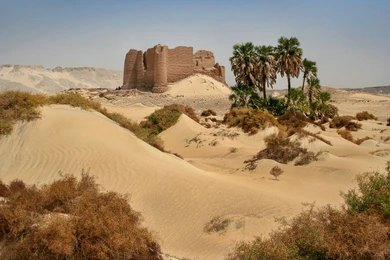
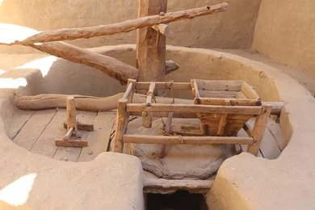
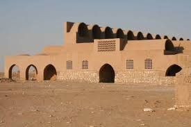
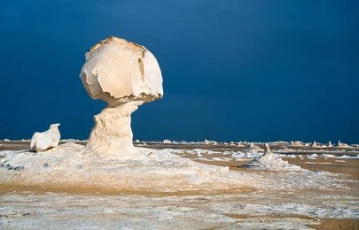

محافظة الوادي الجديد هي أكبر محافظات مصر مساحة، وتقع في الصحراء الغربية. تضم العديد من الواحات، مثل واحة الخارجة وواحة الداخلة، وتتمتع بتاريخ طويل يعود إلى العصور الفرعونية والرومانية.

محافظ الوادي الجديد الحالي هو اللواء دكتور محمد الزملوط، وقد تولى منصبه منذ عام 2017. الزملوط له خلفية عسكرية حيث كان يعمل في القوات المسلحة المصرية قبل تعيينه محافظًا. خلال فترة توليه المنصب، ركز على تعزيز مشروعات التنمية الزراعية والصناعية بالمحافظة، إلى جانب تطوير البنية التحتية والخدمات الأساسية في الوادي الجديد. من بين المبادرات التي يقودها، الاهتمام بالاستثمار في الثروات الطبيعية للمحافظة، مثل الزراعة في الأراضي الصحراوية باستخدام المياه الجوفية، وكذلك دعم المشروعات الصغيرة والمتوسطة التي تساهم في توفير فرص عمل جديدة للسكان.
.jpeg)
.jpeg)
مركز الخارجة هو عاصمة محافظة الوادي الجديد، ويعتبر من أقدم المناطق السكنية في الصحراء الغربية. يحتوي على العديد من الآثار الفرعونية والرومانية، مثل معبد هيبس الشهير.
مركز الداخلة يتميز بطبيعته الخلابة وتاريخه العريق، إذ يعود إلى العصور الفرعونية. يضم العديد من المعالم السياحية المهمة مثل معبد دير الحجر وقرية القصر الإسلامية.
واحات باريس، الواقعة أيضًا في محافظة الوادي الجديد، تُعتبر من الجواهر الطبيعية في مصر، حيث تتميز بمساحات شاسعة من النخيل والأشجار المثمرة. توفر هذه الواحات بيئة مثالية للزراعة، مع مناخ معتدل ومياه جوفية وفيرة، مما يجعلها مركزًا مهمًا للإنتاج الزراعي ويعزز من تنمية المنطقة ويُسهم في تحسين جودة الحياة للسكان المحليين.
واحات الفرافرة، الواقعة في محافظة الوادي الجديد بمصر، تُعتبر من أهم المناطق الزراعية التي تتميز بجمالها الطبيعي وتنوعها البيئي. تتمتع هذه الواحات بمناخ معتدل وتربة خصبة، مما يجعلها مكانًا مثاليًا لزراعة النخيل والحبوب، وتساهم بشكل كبير في تعزيز الاقتصاد المحلي وتحسين مستوى المعيشة في المنطقة.


.jpg)